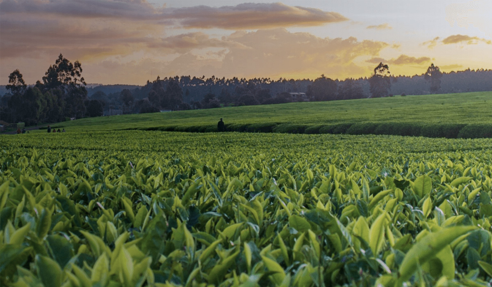
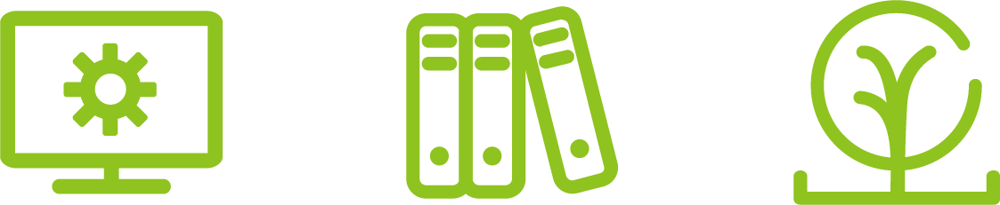
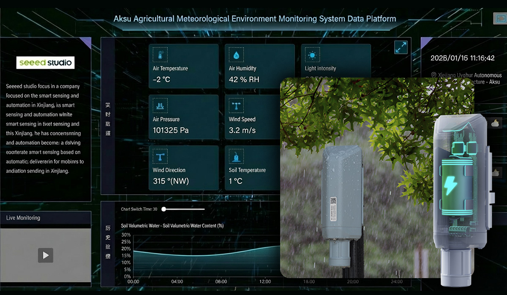
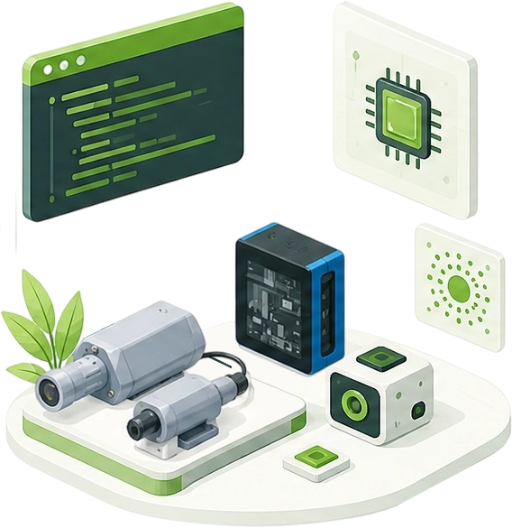
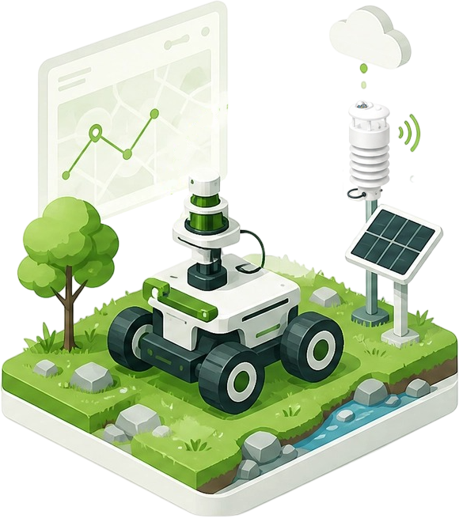
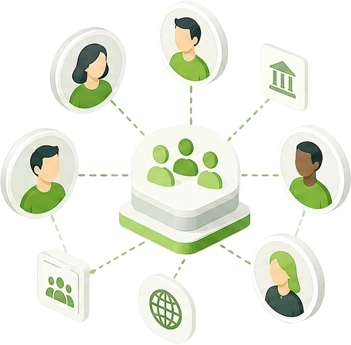
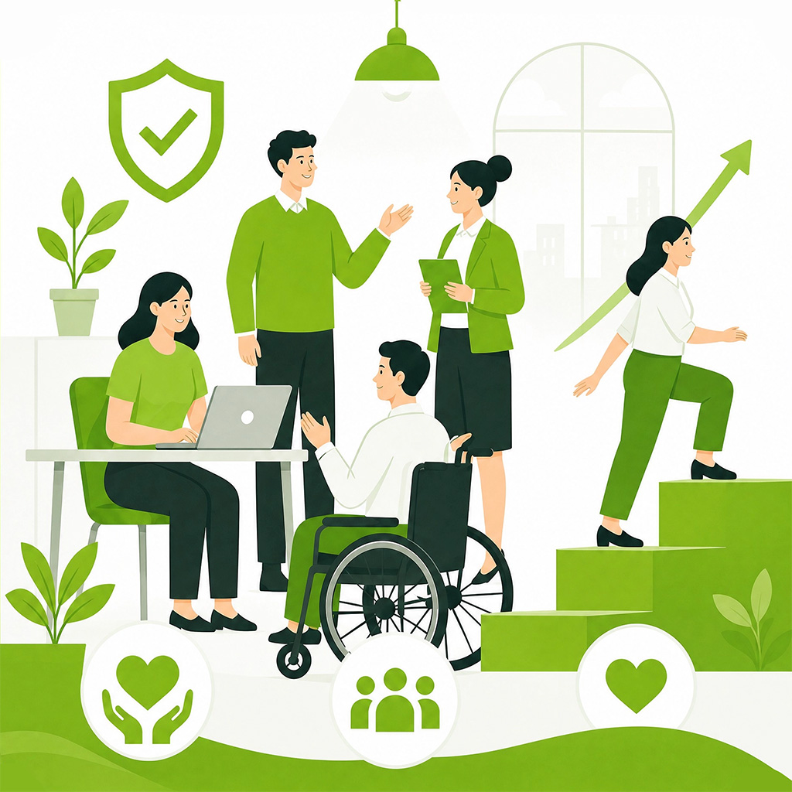
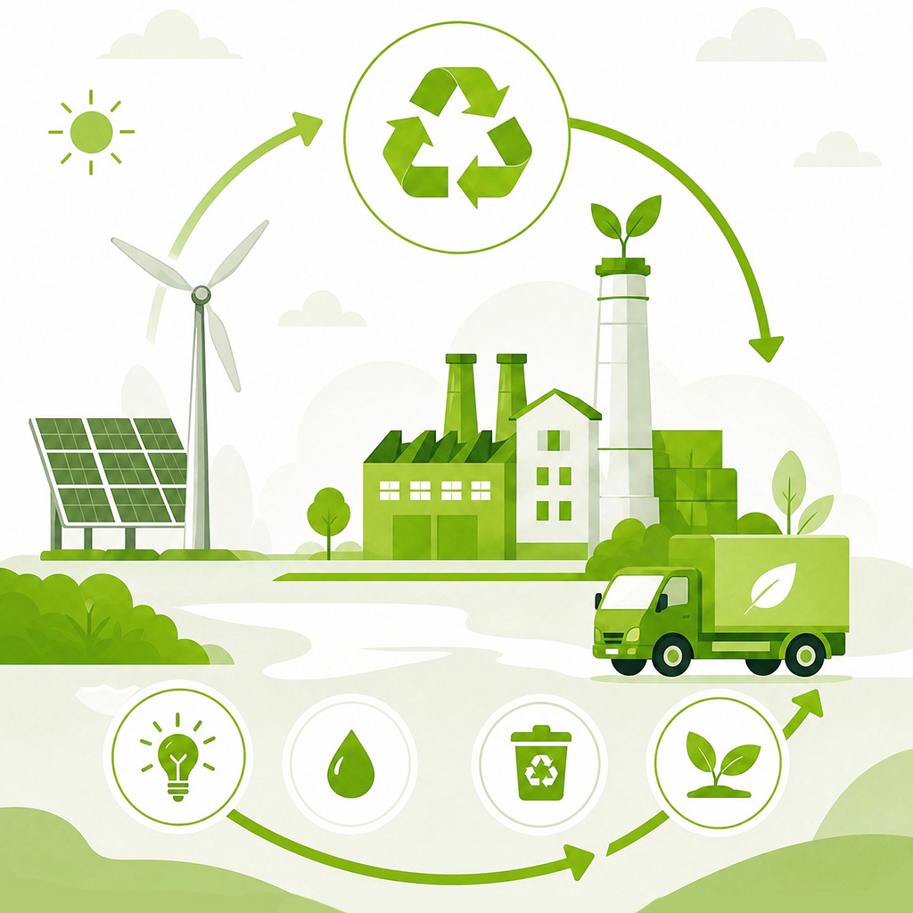

› SEEED FOR SDGs
Open technology for
sustainable actions.
From open hardware and sensing to edge AI and real-world deployment, Seeed works with researchers, organizations, and communities to turn sustainability ideas into working solutions.
Challenge signals
- WaterClimate & Resources
- EducationLearning & Open Knowledge
- Local InnovationResilient Communities
›01 WHY SEEED FOR SDGs
Technology as a bridge to sustainable action
Real progress happens when people who understand a challenge can access the tools to act on it. Seeed connects technology, engineering capabilities, and global communities with people working toward a more sustainable future.

Local Knowledge People who understand the challenge

Real-world Action Solutions shaped by place and evidence
Technology people can build with
Accessible hardware, sensing, and AI tools designed for experimentation.

From prototype to field
Supporting the path from an early idea to real-world deployment.

Collaboration across ecosystems
Connecting researchers, organizations, and communities around shared challenges.
›02 CHALLENGE AREAS
Explore real-world challenges
Aligned with the UN Sustainable Development Goals, we organize our work around four real-world challenges where technology can make a practical difference.
Life & Ecosystems
Biodiversity, wildlife, oceans, forests, and new ways to understand other species.
Explore Interspecies Water · Energy · AgricultureClimate & Resources
Practical approaches to sensing, resource efficiency, and resilient infrastructure.
Explore stories Education · Citizen ScienceLearning & Open Knowledge
Tools and shared knowledge that help more people learn, make, and participate.
Explore stories Local Innovation · InclusionResilient Communities
Technology shaped around local needs, from communication to community infrastructure.
Explore stories›04 TECHNOLOGY IN SERVICE OF IMPACT
How We Enable Change
Sustainable ideas need more than inspiration. Seeed brings together technology, platforms, engineering capabilities, and open resources to help promising solutions move forward.
›05 SIGNATURE FIELD CAPABILITY
Take Innovation to the Field
Some challenges cannot be solved from behind a desk. Chaihuo MCV is a mobile innovation platform designed to bring tools, people, and experimentation directly into the field.
From workshops and prototyping to environmental sensing and community deployment, the mobile lab creates space for technology to meet local realities.
Explore Chaihuo MCV›06 HOW WE OPERATE
Responsible from Within
Our commitment to sustainability also begins with how we work — how we care for people, respect responsible practices, and reduce the impact of our own operations.

People & Well-being
Employee well-being, safety, learning, growth, and inclusion.
Human Rights & Responsible Practices
Human rights, labor practices, responsible supply chain, and ethics.

Lower-impact Operations
Energy, waste, recycling, resource efficiency, and lower-carbon operations.
›07 COLLABORATE WITH SEEED
Build what matters, together.
Working on a meaningful sustainability challenge? We collaborate with researchers, organizations, and communities exploring how technology can create practical, scalable impact.
Selected projects may receive hardware sponsorship, technical guidance, engineering resources, or ecosystem connections, depending on project fit, feasibility, and potential impact.
Taking research beyond the lab?
Looking for a technology partner for an SDG initiative?
Building solutions rooted in local needs?
›08 PROJECT INTRODUCTION
Tell us what you are working on.
Completing this form opens a draft in your email app. Review the message, then select Send to contact branding@seeed.cc.